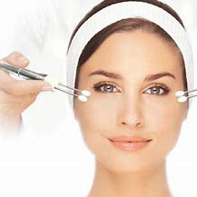

Our Facial Treatments
All Treatments include the highest-grade products that target your particular skin type. The most beneficial therapies such as microcurrent and ultrasonic exfoliation are included in all facials and high frequency when it is beneficial, with no additonal charge. Typical add-ons like warm paraffin or aloe dips for the hands and feet are just part of every facial treatment experience. You will never receive an up-charge for any extra therapy your esthetician offers or suggests.
Custom 60 Minute Facial: $75
Custom 90 Minute Facial: $90
Custom 90 Minute Facial: $90
| Therapy | 60 Minute | 90 Minute |
|---|---|---|
| Ultrasonic Exfoliation | Yes | Yes Extended Time |
| Lymphatic Drainage Massage | Yes | Yes Extended Time |
| Microcurrent | Yes | Yes Extended Time |
| Paraffin/Aloe Dip for Hands | Yes | Yes |
| High Frequency | When Needed | When Needed |
